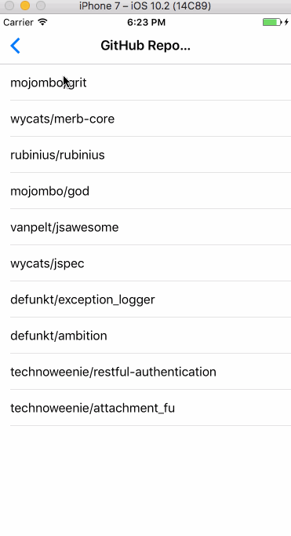
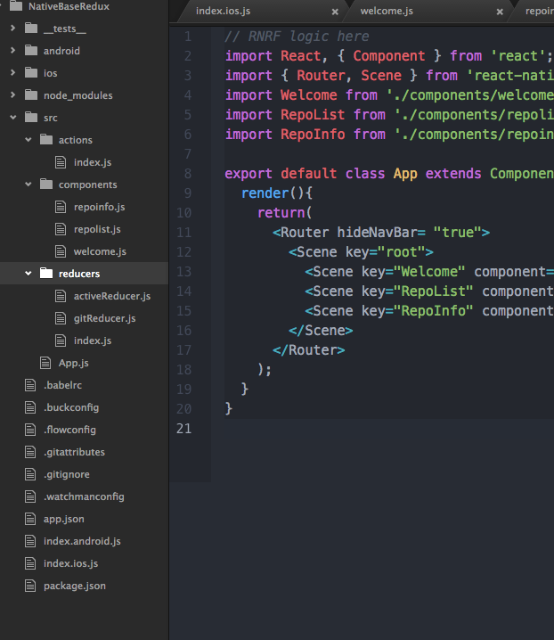

GitApp Example
GitApp is a sample app made with React Native, Redux, and React Native Router Flux and NativeBase as the main Libraries at work here.
This is a simple step-by-step tutorial to get familiar with basic concepts of Redux(used for state management), and React Native Router Flux(used for navigation). This simple App should get you familiar with these Libraries and their use case.
Find full code here.

1. Aim
We aim to create an 3 page simple application. It will fetch a list of Top Ten Github Libraries and once the user clicks on any of the items, App will display the information about the item clicked in the next page.
2. Installation
Note:
If you encounter an issue with React Native Router Flux during building your project, it might be due to issue with latest versions of React Native. Check out this issue. You might have to bump down the versions of React Native and React
- SetUp React Native Project
SetUp a React Native project. Refer this for more information about setting up a React Native project. - Installing Libraries
With a React Native project SetUp, We can now install all required Libraries as follows.
a. Redux and react-redux
In your terminal enter the following
npm install redux react-redux --save
b. React Native Router Flux
Do thisnpm install react-native-router-flux --save
c. NativeBase
npm install native-base --save
Configure all dependencies by running the following command
react-native link
By the end of Installation, your package.json file should look something like this.

3. Some Important stuff
Before starting with the development of the App, Let's first create a required folder structure for setting up Redux.
We first need a src folder that resides in the App root location and holds all our logic.
Inside src, we have three folders namely => actions , reducers , components and one file App.js. App.js is where our App lives mainly. We will import our App from this file.
We will populate these folders with their respective files as an when we need them.
The folder structure should look something like this.

4. Getting Hands Dirty
Now that we have setup our basic project, Let's get started with some real coding and getting things to work.
5. Setting Up Redux
If you are unfamiliar with Redux and it concepts, Go through this Documentation and use it as a reference.
5.0.1. Redux Store Setup
Back in your index.js file, we will create our Redux Store. Store is where all data required by our App will live. Also, any data that is required by the App during its execution, is received from the Store.
We are going to be optimistic here and import all files we require.(even the ones we have not created yet).
Go ahead and include all these imports in your index.js file and create the Store as follows.
If any of this does not make sense now, it will soon enough ;)
import allReducers from './src/reducers/index.js';
import App from './src/App.js';
import {createStore} from 'redux';
import {Provider} from 'react-redux';
const store = createStore(allReducers);
- Reducers can be viewed simply as functions that return some data. All these small pieces of data can be used in App wherever required by importing respective Reducers. We will learn more about this soon.
- An App can have multiple reducers. We are going to use these reducers to form our much required Store.
- In the above code, we have assumed that we will have a big combined allReducers object having all our Reducers.
- We have also imported our main App component from
App.jsfile. - createStore function is imported from redux module to create a Store(no surprise there).
- A Provider component is imported from react-redux module. This component will take our App component as a child and make our Store data available to all parts of our App. It looks something like this.
render() { return(
<Provider store= {store}>
<App />
</Provider>
);
}- Lastly we create a Store to pass to our Provider component. We pass allReducers object to create our Store. Our index file should look something like this.
5.1. Redux Reducers
For our purposes, we can have two reducers,
- A gitReducer to return the list of Repos from Github after it has been fetched.
- A activeReducer to return the Repo object that has been selected by the user, otherwise, it must return null. We can go ahead and create these two files in our reducers folder we had already created.
gitReducer.js
var gitRepos= [];
export default function(state=gitRepos, action){
switch (action.type) {
case "Get_Repos": { gitRepos = action.payload;
console.log(action, 'action');
return gitRepos;
}
break;
}
return gitRepos;
}
activeReducer.js
export default function(state= null, action){
switch (action.type) {
case "Repo_Selected": return action.payload;
break;
}
return state;
}
It can be observed that reducer functions take in state and action as arguments. In case an Action is dispatched form any point in the App, the action will be sent to all Reducers that we have created.
The code should make more sense once we are actually using these reducers in our components.
The code above demonstrates the use of actions to manipulate data returned by a Reducer.
More about Actions in the coming sections.
Lastly we need a file to combine all our reducers into One Big Javascript object. We create a file inside reducers folder, index.js.
reducers/index.js
import {combineReducers} from 'redux';
import GitReducer from './gitReducer.js';
import ActiveRepo from './activeReducer.js';
const allReducers= combineReducers({
repos: GitReducer,
activeRepo: ActiveRepo
});
export default allReducers;
Note how the combineReducers function takes in all the reducer objects. The names used to initialize Reducers in the combineReducers function will be used to reference that particular Reducer anywhere in our App. More on this later.
5.2. Redux Actions
We will create ActionCreators which are functions that return action objects with two parameters :-
- type : Used to identify the type of action we are sending. It is also used to differentiate between multiple actions.
- payload : Used to hold any data that might be required to accompany the object. (It should become clear in a while).
For our purposes, we just need two actions
Get_Repos : To initiate fetch of all Repos from Github API. This action will also change the data returned by our gitReducer.
Repo_Selected : Fired when a particular Repo is selected by the user , it changes the activeReducer to return selected user.
5.2.1. Redux Thunk Middleware
Why is it required?
The operation of fetching Github Repo list from its API comes under the category of Async operations.
Async operations are where the response to operation does not come instantly, rather is takes some delay time.
During normal execution of an App, at run time, when an Async operation is encountered, the program flow would have reached ahead when the response from the Async operation is received. This is not desired.
We need a mechanism to halt program execution until we receive a response of our Async operation.
Thus for our Async fetch operation, we make use of redux-thunk.
Installation
npm install --save redux-thunk
Setup
Back in our index.js file where we created our store, we have to make the store aware of the Thunk Middleware. Here is how its done.
../../index.js
import thunk from 'redux-thunk'
import {createStore, applyMiddleware} from 'redux';
const store = createStore(allReducers, applyMiddleware(thunk));
Now lets create all our actions including the thunk action.
/action/index.js
//Action to get all Repos
export function getRepos(response) {
return{
type: 'Get_Repos',
payload: response
}
}
// Thunk function, it calls the getRepos action above after it receives the fetch response.
export function getRepoThunk() {
return function(dispatch, getState) {
fetch('https://api.github.com/repositories')
.then(e => e.json())
.then(function(response){
console.log(response);
var arr = response.slice(0,10);
dispatch(getRepos(arr))
}).catch((error) => {
console.error(error,"ERRRRRORRR");
});
}
}
// Repo selected action
export function repoSelected(repo){
return{
type: 'Repo_Selected',
payload: repo
}
}Note how above actions receive arguments to collect data to pass as a payload, we will pass this data while calling any of the Actions
5.3. Redux components
With all the Redux setup taken care of, we can now create our Screens and Components. We will be needing three screens.
We are using NativeBase for the UI Library as it will speed up the process considerably. Lets deal with each of these screens individually.
5.4. Welcome Screen
This screen will just display some welcome text and includes a button that should navigate to the next screen(note we have not Setup our RNRF , we will do it after setting up all our screens).
Code
import React, { Component } from 'react';
import { Container, Content, Header, Left, Right, Body, Title, Text, Button, Card, CardItem } from 'native-base';
import { Actions } from 'react-native-router-flux';
class Welcome extends Component {
render() {
return (
<Container>
<Header>
<Left />
<Body>
<Title>Welcome</Title>
</Body>
<Right />
</Header>
<Content contentContainerStyle =
justifyContent: 'center',
alignItems: 'center',
paddingTop: 40,
paddingHorizontal: 10}}>
<Card>
<CardItem>
<Text>
Welcome to Candy Land Folks ;)
</Text>
</CardItem>
<CardItem>
<Text>
Press Button to fetch Github Repos
</Text>
</CardItem>
</Card>
<Button dark block
onPress= {() =>{ Actions.RepoList();}} style= marginTop: 40}}>
<Text> Fetch Github Repos </Text>
</Button>
</Content>
</Container>
);
}
}
export default Welcome;
Note: We will use RNRF to navigate between screens, hence in the above code, we import Actions from RNRF and we have added Actions.RepoList() as an onPress event on the button which will take us to the RepoList Screen.
The general syntax to navigate between screens in RNRF goes like :-
Actions.ACTION_NAME(PARAMS)
5.5. RepoList Screen
This screen will display the List of fetched Repos. We will be needing to use some Reducers data and Actions.
5.6. Important stuff
In order to be able to use Reducers and actions, we need to use two important functions. Both these functions have extremely simple applications(although the names sound scary enough).
mapStateToProps=> This function, simply takes your reducer data, that is required, and converts it into a usable Prop. Now we can use the data as a prop. examplethis.props.data.General Syntax of mapStateToProps
function mapStateToProps(state){ return{ dataObj : state.reducerName }; }
Remember how we allotted names to Reducers in the
combineReducersfunction. We use the same name to call respective ReducermatchDispatchToProps=> This function simply converts our Actions into usable props.
General Syntax of matchDispatchToProps
function matchDispatchToProps(dispatch){ return bindActionCreators({action1: importedAction1, action2: importedAction2}, dispatch) }
bindActionCreators function here simply combines our actions into a single object.
Our final code for this screen looks something like this.
/components/RepoList.js
import React, { Component } from 'react'; import { Container, Content, Header, Left, Right, Body, Title, Text, Button, Spinner, List, ListItem, Icon } from 'native-base'; import {connect} from 'react-redux'; import {bindActionCreators} from 'redux'; import { Actions } from 'react-native-router-flux'; import {getRepos, getRepoThunk, repoSelected} from '../actions/index'; class RepoList extends Component{ componentWillMount(){ this.props.getRepoThunk(); } render(){ if(this.props.repos.length === 0){ return( <Container> <Header> <Left> <Button transparent onPress= {()=>Actions.pop()}> <Icon name='arrow-back' /> </Button> </Left> <Body> <Title>Repo List</Title> </Body> <Right /> </Header> <Content > <Text>Loading your repo List, Please wait</Text> <Spinner /> </Content> </Container> );} else if(this.props.repos.length !== 0){ return( <Container> <Header> <Left> <Button transparent onPress= {()=>Actions.pop()}> <Icon name='arrow-back' /> </Button> </Left> <Body> <Title>GitHub Repo List</Title> </Body> <Right /> </Header> <Content> <List dataArray={this.props.repos} renderRow={(item) => <ListItem onPress={() => { Actions.RepoInfo(); this.props.repoSelected(item)}}> <Text>{item.full_name}</Text> </ListItem>}> </List> </Content> </Container>);} }} function mapStateToProps(state){ return{ repos : state.repos }; } function matchDispatchToProps(dispatch){ return bindActionCreators({getRepos: getRepos, getRepoThunk: getRepoThunk, repoSelected: repoSelected}, dispatch) } export default connect(mapStateToProps, matchDispatchToProps)(RepoList);
Explained
- We have imported all the required actions and converted both Reducers and Actions into Props as described above.
- Inside
componentWillMountfunction, we callgetRepoThunkfunction to initiate the fetch action. - We are listening for changes in the
this.props.reposinside render method, to know when the List is fetched. As long as the response is not received, we show a spinner on the screen. - Once List is fetched, the component returns a different Javascript displaying the List.
- The back Button present in the
Headercomponent will fire aActions.pop()function of RNRF to return to the previous screen. - Also on clicking any of the
ListItemcomponents, we will fire a Redux actionRepo_Selected. OuractiveReduceris listening for this action as stated above. Also the click will navigate toRepoInfopage through the RNRF actionActions.RepoInfo(). - The last line with the connect function takes in both our smart functions =>
mapStateToPropsandmatchDispatchToPropsand combines it to our dumb component to make it smart and powerful, with access to Actions and Reducer data.
5.6.1. RepoInfo Screen
This screen will display the information about the Repo selected by the user. The code looks like this.
/components/repoinfo.js
import React, { Component } from 'react';
import { Container, Content, Header, Left, Right, Body, Title, Text, Button, List, ListItem, Icon} from 'native-base';
import {connect} from 'react-redux';
import { Actions } from 'react-native-router-flux';
class RepoInfo extends Component{
render(){
return(
<Container>
<Header>
<Left>
<Button transparent onPress= {()=>Actions.pop()}>
<Icon name='arrow-back' />
</Button>
</Left>
<Body>
<Title>Repo Info</Title>
</Body>
<Right />
</Header>
<Content>
<List>
<ListItem><Text>{this.props.activeRepo.full_name}</Text></ListItem>
<ListItem><Text>{this.props.activeRepo.description}</Text></ListItem>
<ListItem><Text>{this.props.activeRepo.id}</Text></ListItem>
<ListItem><Text>{this.props.activeRepo.owner.login}</Text></ListItem>
<ListItem><Text>{this.props.activeRepo.url}</Text></ListItem>
</List>
</Content>
</Container>);
}
}
function mapStateToProps(state){
return{
activeRepo : state.activeRepo
};}
export default connect(mapStateToProps)(RepoInfo);
Explained
- The screen takes reducer data from
activeReducer. - activeReducer is usable as a Prop.
6. Adding RNRF and finishing up
Finally in our App.js, we apply our RNRF logic. For Syntax and tutorial refer this.
/src/App.js
// RNRF logic here
import React, { Component } from 'react';
import { Router, Scene } from 'react-native-router-flux';
import Welcome from './components/welcome.js';
import RepoList from './components/repolist.js';
import RepoInfo from './components/repoinfo.js';
export default class App extends Component{
render(){
return(
<Router hideNavBar= "true">
<Scene key="root">
<Scene key="Welcome" component={Welcome} title="Welcome" initial={true} />
<Scene key="RepoList" component={RepoList} title="RepoList" />
<Scene key="RepoInfo" component={RepoInfo} title="RepoInfo" />
</Scene>
</Router>
);
}
}Here the key property has been used in our app to provide navigation Actions like: Actions.RepoList
By now your folder structure should look something like this

With that, we have completed setting up our app, build your project and run.